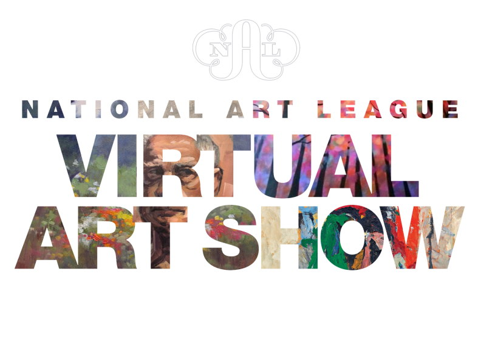

NASA Spacesuit User Interface Technologies for Students (NASA SUITS) is a design challenge in which college students from across the country help design user interface solutions for future spaceflight needs. NASA’s Artemis missions seek to land the first woman and first person on the moon and build to a sustained human presence on the Moon and ultimately, Mars. This means engineers are actively developing technologies needed to assure successful completion of science and exploration missions. As humanity pushes further into the space it is essential that crewmembers on spacewalks be equipped with the appropriate new technologies necessary for the elevated demands of surface exploration on the Moon and Mars. By participating in the NASA SUITS challenge, you can play a part in revolutionizing the human spaceflight experience!
Get ready for a journey into the world of limitless creativity with the Google AI Hackathon! Join us in this event where innovation knows no bounds. From all corners of the globe, we're inviting you to redefine what's possible with Google's Generative AI tools. This hackathon is your playground to craft apps that leverage the power of Generative AI. Whether you're cooking up a masterpiece of digital art, crafting poetic masterpieces, engineering the next big thing in creative tech, or turning data into an impactful product that solves real-world challenges, the canvas is wide open. Google AI's groundbreaking technologies are at your disposal to inspire the world with your boundless creativity. Let's showcase what's possible when passion meets technology at the Google AI Hackathon! Try the Gemini API Cookbook to get started!
The National Art League seeks entries for a virtual art exhibition, July 1 - September 1, 2025. Over $2,000 in Awards. First Place $500. Juror: Chris Lucore, owner and curator of The Lucore Art Gallery, NY. Open to all artists 18 years of age or older living in the US, working in all styles of artwork, both 2D and 3D media, including sculpture. Artwork must be original in concept, design and execution. Photography, digital art, computer art, reproductions (such as giclee, prints) are not acceptable unless part of a mixed media artwork. Film, video, AI generated art, installation art or performance art are not accepted. No crafts (such as jewelry, beads) or kit work. No artwork previously exhibited in a judged show at the NAL. $25 for one entry, $10 second entry. Fees are not refundable. Deadline: June 14, 2025. More info. Contact: email
Arcadian Gallery in Cumberland, MD seeks entries for a juried art exhibition, October 1-31, 2025. $5250 in prizes. Juror: Carel Pieter Brest van Kempen. Two-dimensional artwork only. This exhibition is unusual in that it welcomes fine art print submissions and original artwork. Artists may also submit digital files, which, if accepted into the exhibition, the Gallery will print for the brick-and-mortar show. There will be an online exhibition as well. Artwork must depict North, Central, or South American wildlife and may include extinct species, including dinosaurs. Artwork may not be priced higher than $4000 and must have been created within the last seven years. $30 for the first two pieces. $20 for each additional entry up to five entries. Deadline: July 31, 2025. More info at CafÉ. Contact: email or call 301-919-3494.